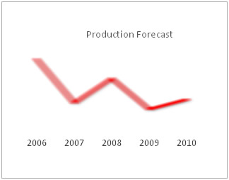

| Blur Style Type | |||||||||||||
The Blur Style Type is the simplest of all style types, which basically helps to blur any chart object for visual effect. It has the following parameters: |
|||||||||||||
|
|||||||||||||
| Controlling blur amount | |||||||||||||
You can configure the amount of blur as under: | |||||||||||||
| |||||||||||||
When applied to columns, it gives the following effect: |
|||||||||||||
|